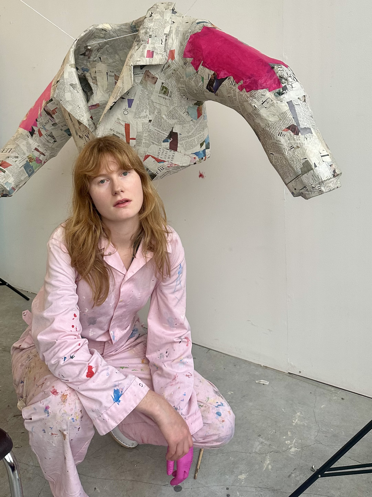

About
Ulrike Siemer is an artist and sculptor based in Brussels, working primarily with papier-mâché.
Her practice explores everyday objects, familiar rituals and shared memories through sculptures and installations. Often drawing inspiration from ordinary situations, her work combines nostalgia, humour and a sense of the unexpected.
Alongside her sculptural practice, she develops scenography, window displays and creative collaborations.
